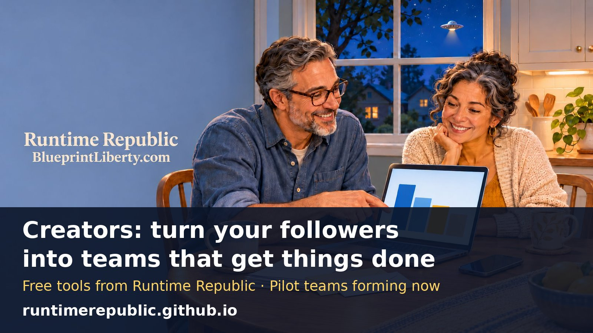

Every Runtime Republic press release, newest first. The latest one is also on the join page.
November 15, 2026

The Civic Encounters Challenge launches December 1, 2026. Members use AI and a free, private GitHub account to track every dollar and find out who gets paid first in their house: the government or their family.
Post: Are you ready to Rock-N-Roll for Liberty this Christmas!!! The Civic Encounters Challenge launches Dec 1, 2026. Find out who gets paid first in your house: the government or your family. Your money stays private. https://runtimerepublic.github.io/ #CivicEncounters
November 15, 2026

Runtime Republic invites creators with a following on any issue, whether jobs and visas, property taxes or the FairTax, to turn that audience into local teams. Each creator founds a team that speaks only for itself, and followers form Study Circles in their own counties to study official public data, log evidence on every side, and petition their officeholders. Runtime Republic provides the tools free and takes no side.
The first pilot: one creator, one team of seven, four weekly closes, then a decision together on whether to grow.
Post: Creators: your followers want to do more than like a post. Runtime Republic gives your audience free tools to form local teams, study the evidence and petition officeholders. You speak for your team. Pilot teams forming now: https://runtimerepublic.github.io/ #CivicEncounters